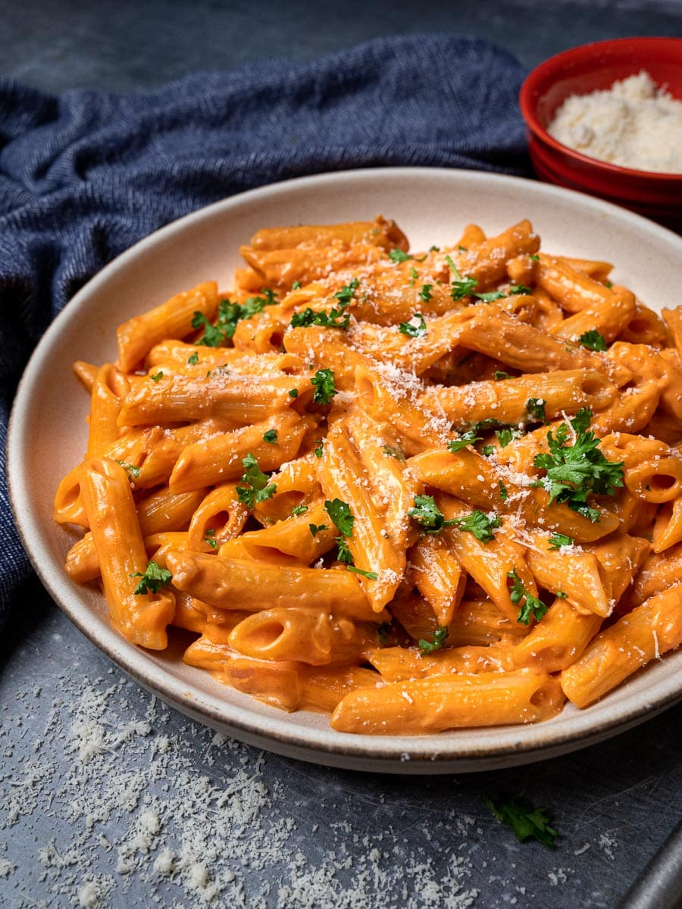

Home
Pasta

Description
Pasta Fagioli is a comforting and hearty Italian soup that combines pasta, beans, and vegetables in a flavorful broth. Known for its rustic charm, this dish is packed with protein from the beans and satisfying carbohydrates from the pasta, making it a perfect meal for colder weather. The soup is typically seasoned with garlic, onions, tomatoes, and herbs, such as rosemary and thyme, which infuse the broth with deep, savory flavors. It’s a versatile dish that can be enjoyed as a main course or a filling appetizer.
This dish varies slightly depending on regional variations and personal preferences. Some versions include a tomato-based broth, while others opt for a more brothy style with olive oil and garlic. The beans, usually cannellini or kidney beans, add a creamy texture that complements the small pasta shapes commonly used. Pasta Fagioli is easy to make, budget-friendly, and can be enjoyed by vegetarians and meat-eaters alike. It’s a dish that brings the flavors of Italy into your home, offering comfort and warmth in every bite.
Ingredients
- Olive Oil – 2 tablespoons
- Onion – 1 medium, chopped
- Garlic – 3 cloves, minced
- Carrot – 1 medium, peeled and chopped
- Celery – 2 stalks, chopped
- Tomatoes – 2 medium, chopped (or 1 can of diced tomatoes)
- Vegetable or Chicken Broth – 4 cups
- Cannellini Beans – 2 cups (or 1 can, drained and rinsed)
- Small Pasta (e.g., ditalini) – 1 cup
- Fresh Rosemary – 1 sprig, chopped (or 1 teaspoon dried rosemary)
- Salt – To taste
- Black Pepper – To taste
- Parmesan Cheese – Grated (for garnish, optional)
Steps
- Prepare the Vegetables
- Chop the onion, garlic, carrot, and celery into small pieces.
- Chop the tomatoes (if using fresh) or open the can of diced tomatoes.
- Cook the Vegetables
- In a large pot, heat olive oil over medium heat.
- Add the onion, garlic, carrot, and celery, and sauté for 5-7 minutes until softened.
- Add the Tomatoes and Broth
- Stir in the chopped tomatoes (or canned tomatoes) and cook for another 2-3 minutes.
- Pour in the vegetable or chicken broth and bring the mixture to a boil.
- Add Beans and Pasta
- Add the cannellini beans and small pasta to the pot.
- Reduce the heat and let the soup simmer for 10-12 minutes until the pasta is tender and the beans are heated through.
- Season the Soup
- Stir in the fresh rosemary (or dried rosemary), and season with salt and black pepper to taste.
- Serve
- Ladle the soup into bowls and garnish with grated Parmesan cheese, if desired.
- Serve hot with crusty bread for a complete meal.